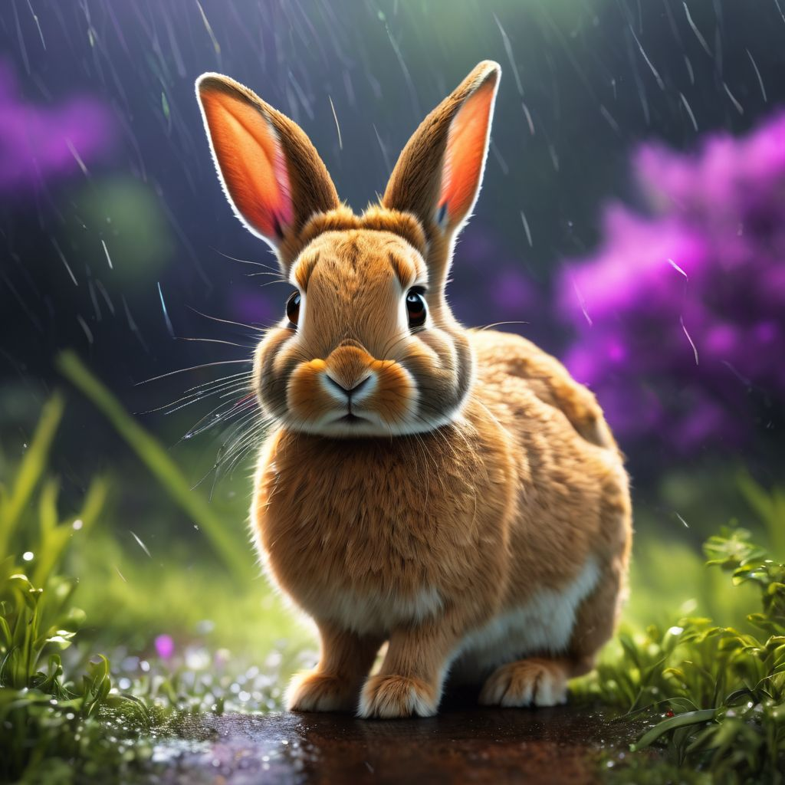
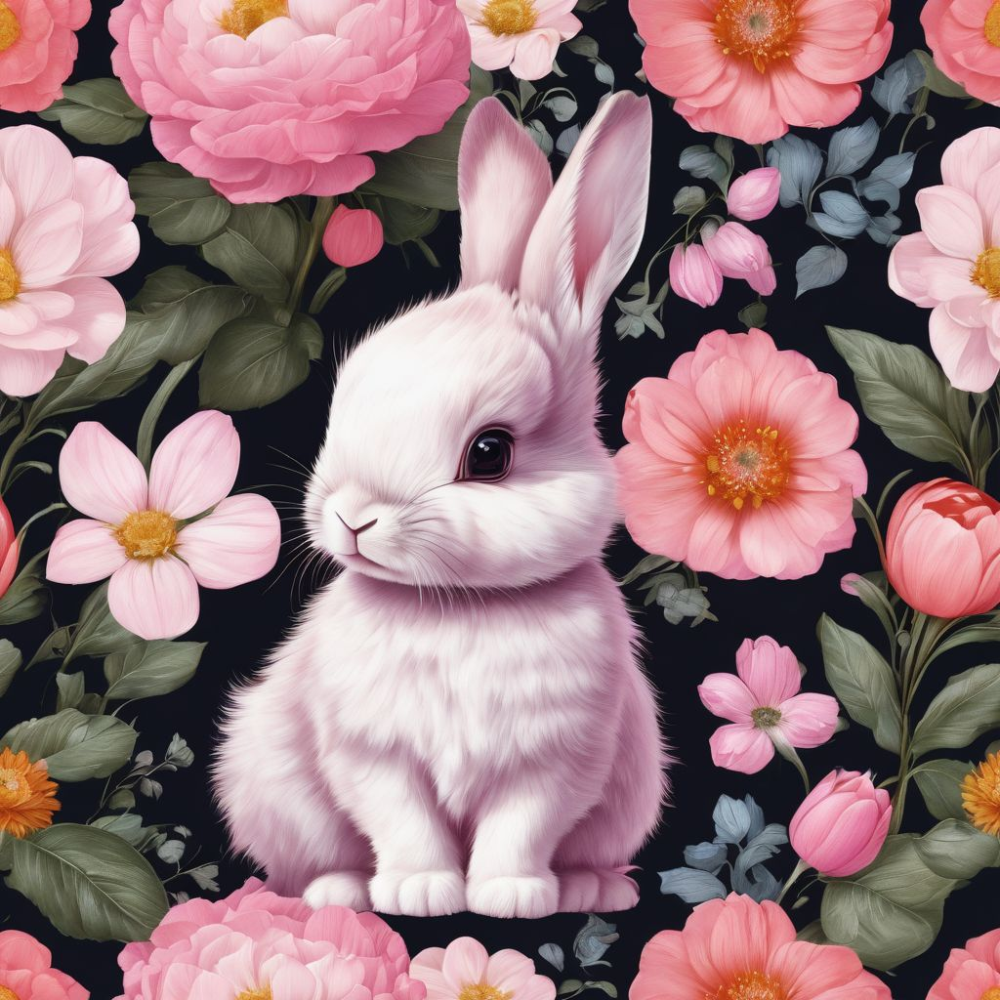
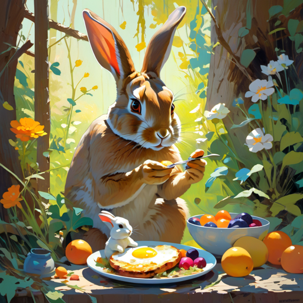
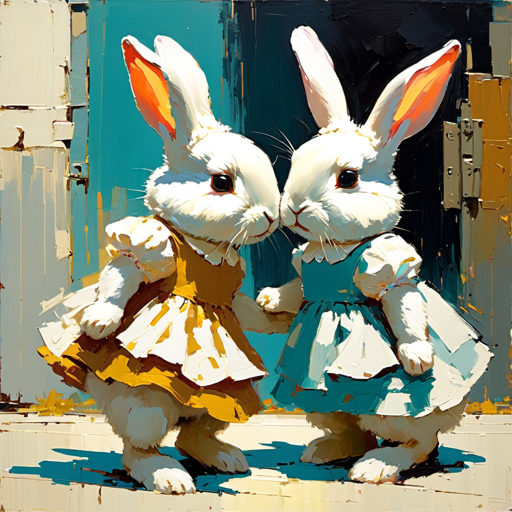
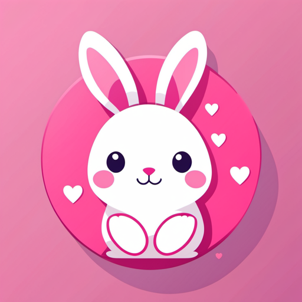
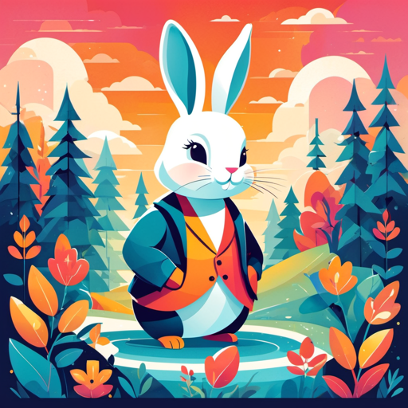

AI Generated Images of Bunnies; Bunny Bytes: A Digital Wonderland
Welcome to the whimsical world of "Bunny Bytes: A Digital Wonderland." Step into an enchanting art gallery where the boundaries between reality and imagination blur, showcasing a unique collection of AI-generated bunnies that will capture your heart and spark your creativity.
"Bunny Bytes" is not just a collection of images; it's a celebration of the fusion of technology and artistic expression, inviting you to explore the enchanting world of AI-generated bunnies and discover the infinite possibilities that emerge when algorithms meet creativity. Step into this digital wonderland, where the boundaries of reality are pushed, and the charm of bunnies takes on a whole new, AI-infused dimension.
Hover over the images to see a description!

Source: IMG2GO | Prompt: "small rabbit rain"

Source: IMG2GO | Prompt: "cute baby bunny pink"

Source: Hotpot | Prompt: "rabbit eating breakfast with baby bunnies"

Source: Hotpot | Prompt: "cute bunnies in dress"

Source: Hotpot | Prompt: "cartoon bunny pink hearts cute"

Source: Hotpot | Prompt: "cartoon bunny"